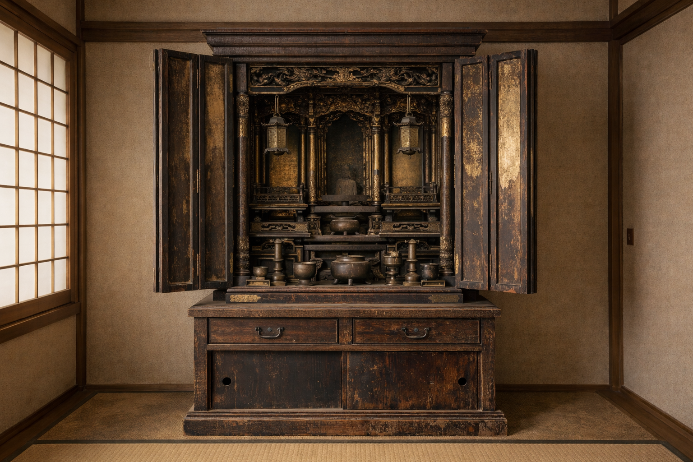
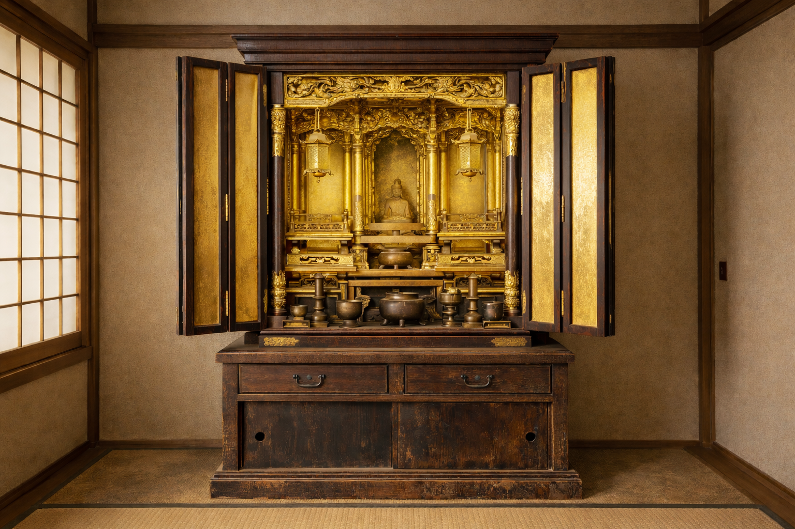
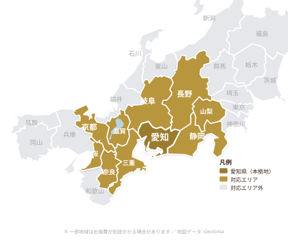

Our Strengths
愛知県を拠点に、お客様のもとへ直接お伺い。余分な中間コストをカットし、出張費を最小限に抑えています。
多くのお客様にご満足いただいてきた確かな実績。大切なお仏壇を安心してお任せいただけます。
長年の経験を積んだ専門の職人が、一つひとつ手作業で丁寧に仕上げます。細部までこだわった仕上がりをお約束します。
Before & After

修復前

修復後
丁寧に洗浄・修復し、輝きを取り戻します
Services
長年のほこりや汚れを丁寧に除去。金箔部分や漆塗り面を傷つけず、本来の美しさを取り戻します。定期的なクリーニングで、お仏壇を長く美しく保てます。
傷や剥がれ、変色した部分を職人の技で修復。金箔の貼り直しや漆の塗り直しなど、お仏壇の状態に合わせた最適な修復を行います。
おりん、花瓶、燭台などの仏具も丁寧に修繕。くすみや変色を取り除き、お仏壇全体の調和を保ちます。仏具一つから承ります。
| 当社 | 大手仏壇店 | 一般業者 | |
|---|---|---|---|
| 出張費 | 格安 | 高額 | 中程度 |
| 職人との直接対話 | 可能 | 仲介あり | 業者による |
| 修復中の経過報告 | LINEで随時確認可能 | なし | なし |
| 仏具単体の対応 | 1点からOK | セット前提 | 対応不可が多い |
| 修復中の代替仏壇 | 無料で貸出 | なし | なし |
Craftsman
長年の経験を持つ職人が、一つ一つ丁寧に仕上げます。
お仏壇は、ご家族の歴史と想いが詰まった大切なものです。私たちは、その想いを受け継ぎながら、一台一台に心を込めて修復作業を行っています。機械任せではなく、職人の目と手で状態を見極め、最適な方法で美しさを蘇らせます。お客様に「頼んでよかった」と言っていただけることが、何よりの喜びです。
Service Area

愛知県を拠点に
車で片道3〜4時間圏内まで出張対応
Voice
祖母の代から使っているお仏壇が、見違えるほどきれいになりました。金箔の輝きが戻り、家族みんなで感動しています。職人さんの丁寧な仕事に感謝です。
T.S 様
愛知県名古屋市
出張費が格安だったので助かりました。他社では見積もりだけで高額でしたが、こちらは良心的な価格で丁寧に仕上げていただけました。大満足です。
M.K 様
岐阜県岐阜市
仏具のおりんが黒ずんでいたのですが、ピカピカに磨いていただきました。仏壇全体のクリーニングもお願いし、新品のような仕上がりに驚きました。
Y.H 様
三重県四日市市
Process
お問い合わせから修復完了まで、丁寧にサポートいたします
お電話またはメールでお気軽にご相談ください。お仏壇の状態をお聞きし、概算をお伝えします。
ご自宅に訪問し、お仏壇の状態を直接確認。最適な修復プランと正式なお見積もりをご提示します。
専用車両で丁寧にお預かりし、工房にて職人が一つひとつ手作業で修復。定期的に進捗をご報告します。
修復完了後、ご自宅へお届け・設置まで対応。お手入れ方法もお伝えし、末永くお使いいただけるようサポートします。
Contact
お見積もりは無料です。お仏壇の状態やご要望をお聞かせください。
専門の職人が最適なプランをご提案いたします。
受付時間: 9:00〜18:00（月〜土）